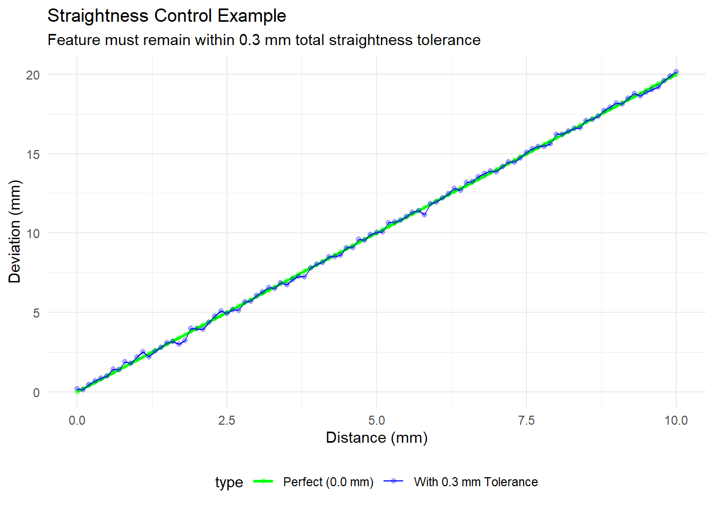

Chapter 4 Geometric Dimensioning and Tolerancing (GD&T)
Learning Objectives
By the end of this chapter, you will be able to:
- Understand the fundamental principles of GD&T per ASME Y14.5 standards
- Differentiate between dimensional and geometric tolerances
- Apply datums, tolerance zones, and modifier symbols correctly
- Create and interpret feature control frames
- Understand the hierarchy of geometric controls
- Apply GD&T to real-world engineering problems
- Use interactive visualizations to verify tolerance stack-up
4.1 1. Introduction to GD&T
Geometric Dimensioning and Tolerancing (GD&T) is a standardized method of specifying and communicating engineering tolerances. Unlike traditional plus-minus dimensioning, GD&T uses a symbolic language that provides a clear, concise description of part geometry and allowable variations.
4.1.1 Why GD&T Matters
Traditional dimensioning (Figure \(ref?)(fig:traditional-vs-gdt)) can lead to: - Ambiguous interpretations of design intent - Excessive part cost due to overly tight tolerances - Functional failures due to under-constrained features - Increased manufacturing costs and waste
GD&T solves these problems by: - Clearly communicating design intent - Maximizing functional tolerance zones - Reducing manufacturing costs - Improving part interchangeability
##
## Attaching package: 'gridExtra'## The following object is masked from 'package:dplyr':
##
## combine
Figure 4.1: Comparison: Traditional vs. GD&T Dimensioning
4.2 2. Fundamental Principles
4.2.1 2.1 The Rule of Interchangeability
GD&T is built on the principle that parts must be interchangeable while satisfying functional requirements. This means:
- All parts produced to specification must fit and function together
- Tolerance zones maximize functional space
- Manufacturing processes can operate at economical levels
4.2.2 2.2 Key Definitions
Datum: A theoretically exact geometric reference (plane, line, or point) from which other geometric characteristics are measured.
Tolerance Zone: The allowable area or volume within which a feature must lie.
Feature of Size: A cylindrical feature (hole, shaft) or a pair of parallel surfaces (slot width) to which a tolerance is applied.
Maximum Material Condition (MMC): The condition where a feature contains the maximum amount of material (smallest hole, largest shaft).
Least Material Condition (LMC): The condition where a feature contains the minimum amount of material (largest hole, smallest shaft).
4.3 3. The Feature Control Frame
The Feature Control Frame (FCF) is the foundation of GD&T notation. It’s a rectangular box divided into compartments that specify the geometric characteristic and its requirements.
Figure 4.2: Feature Control Frame Structure
4.3.1 3.1 Component Breakdown
| Position | Component | Content | Example |
|---|---|---|---|
| 1 | Geometric Characteristic Symbol | Defines the type of control | ⊙ (Position), ⊥ (Perpendicular), ∥ (Parallel) |
| 2 | Tolerance Value | Diameter and numerical value | Ø 0.5 mm, 0.3 mm |
| 3 | Datum A | Primary datum reference | A |
| 4 | Datum B | Secondary datum reference | B |
| 5 | Datum C | Tertiary datum reference | C |
4.3.2 3.2 Modifier Symbols
Modifiers are used after the tolerance value and datum references to specify material condition constraints:
- M (Maximum Material Condition): Tolerance increases as feature departs from MMC
- L (Least Material Condition): Tolerance increases as feature departs from LMC
- S (Regardless of Feature Size): Tolerance remains constant regardless of feature size
| Symbol | Name | Application |
|---|---|---|
| Ø | Diameter | Circular tolerance zone |
| ⊙ | Position | Indicates positional tolerance |
| M | Max Material Condition | Tolerance varies with feature size |
| L | Least Material Condition | Tolerance varies inversely with feature size |
| S | Regardless of Size | Fixed tolerance, independent of size |
4.4 4. The 14 Geometric Characteristics
GD&T defines 14 geometric characteristics organized into four categories:
4.4.1 4.1 Form Controls (No Datum Required)
These controls constrain the shape of individual features.
| Symbol | Name | Definition |
|---|---|---|
| ⌢ | Straightness | All points lie on straight line |
| ⌭ | Flatness | All points lie on same plane |
| ⌒ | Circularity | All points equidistant from center |
| ◯ | Cylindricity | All points equidistant from axis |
Interactive Example: Straightness 
4.4.2 4.2 Orientation Controls (Datum Required)
These controls define how features are oriented relative to a datum.
| Symbol | Name | Definition | Use_Case |
|---|---|---|---|
| ⊥ | Perpendicularity | Feature is perpendicular to datum | Holes perpendicular to mounting surface |
| ∥ | Parallelism | Feature is parallel to datum | Surfaces parallel for assembly |
| ∠ | Angularity | Feature at specific angle to datum | Angled surfaces at specific degrees |
4.4.3 4.3 Location Controls (Datum Required)
These controls define where features are positioned.
| Symbol | Name | Definition | Example |
|---|---|---|---|
| ⊙ | Position | Feature location relative to datums | Bolt hole pattern |
| ⊕ | Concentricity | Feature axis coincident with datum axis | Concentric bores |
| ◉ | Symmetry | Feature symmetrical about datum plane | Symmetrical slot |
Interactive Example: Positional Tolerance
## Warning in annotate("text", x = 51.5, y = 50.5, label = "Datum Intersection", :
## Ignoring unknown parameters: `fontsize`## Warning in annotate("text", x = 50, y = 49.3, label = "Ø0.7 mm\\nTolerance
## Zone", : Ignoring unknown parameters: `fontsize`Figure 4.3: Positional Tolerance Visualization
4.4.4 4.4 Runout Controls (Datum Required)
These controls define circular or total runout of features about a datum axis.
| Symbol | Name | Definition | Application |
|---|---|---|---|
| ⌬ | Circular Runout | Runout at each circular element about datum axis | Rotating bearing surfaces |
| ⌭ | Total Runout | Total runout across all circular elements | Shaft wobble tolerance |
4.5 5. Datum Systems
Datums are the foundation of GD&T. They establish the reference framework from which all tolerances are applied.
4.5.1 5.1 Datum Selection Hierarchy
The datum system typically follows a three-plane reference:
## Warning in annotate("text", x = 5, y = 3.5, label = "PRIMARY DATUM
## (A)\\nLargest, most stable surface", : Ignoring unknown parameters: `fontsize`## Warning in annotate("text", x = 9, y = 3.5, label = "SECONDARY\\nDATUM (B)", :
## Ignoring unknown parameters: `fontsize`## Warning in annotate("text", x = 5, y = 6.75, label = "TERTIARY DATUM (C)", :
## Ignoring unknown parameters: `fontsize`Figure 4.4: Three-Plane Datum System
4.5.2 5.2 Datum Reference Frame
The Datum Reference Frame (DRF) is a coordinate system established by the datums:
| Position | Abbreviation | Constraint | Feature | Purpose |
|---|---|---|---|---|
| Primary | A | 3 DOF restricted | Largest plane/surface | Establish origin |
| Secondary | B | 2 DOF restricted | Perpendicular surface | Establish X-axis |
| Tertiary | C | 1 DOF restricted | Edge or smallest feature | Establish Y-axis |
4.6 6. Material Conditions and Bonus Tolerances
4.6.1 6.1 Maximum Material Condition (MMC)
MMC is the condition where a feature contains the maximum amount of material: - Smallest hole diameter - Largest shaft diameter - Widest slot
## Warning in geom_text(aes(label = diameter), vjust = -0.5, fontsize = 5, :
## Ignoring unknown parameters: `fontsize`## Warning: Removed 3 rows containing missing values
## or values outside the scale range
## (`geom_col()`).Figure 4.5: Maximum Material Condition Example
4.6.2 6.2 Bonus Tolerance
When using MMC modifier, a bonus tolerance is granted as the feature departs from MMC. This maximizes functional tolerance while ensuring assembly.
## Warning in annotate("text", x = 9.9, y = 0.35, label = "Base Tolerance = 0.4
## mm", : Ignoring unknown parameters: `fontsize`## Warning in annotate("text", x = 10.1, y = 0.65, label = "Bonus Tolerance =
## Actual - MMC", : Ignoring unknown parameters: `fontsize`## Warning: Removed 2 rows containing missing values
## or values outside the scale range
## (`geom_line()`).## Warning: Removed 2 rows containing missing values
## or values outside the scale range
## (`geom_point()`).## Warning: Removed 2 rows containing missing values
## or values outside the scale range
## (`geom_ribbon()`).Figure 4.6: Bonus Tolerance Calculation
4.7 7. Common GD&T Applications
4.7.1 7.1 Bolt Hole Pattern
Problem: Ensure bolt holes align for assembly.
Solution: Use position tolerance relative to three datums.
## Warning in annotate("text", x = 5, y = 10, label = "10", fontsize = 3):
## Ignoring unknown parameters: `fontsize`## Warning in annotate("text", x = 25, y = 5, label = "25", fontsize = 3, color =
## "red", : Ignoring unknown parameters: `fontsize`## Warning in annotate("text", x = 25, y = 50, label = "Position: Ø1.5 @ MMC | A | B", : Ignoring unknown parameters: `fontsize`
## and `bbox`Figure 4.7: Bolt Hole Pattern with GD&T
4.7.2 7.2 Shaft Runout Control
Problem: Ensure rotating shaft doesn’t wobble excessively.
Solution: Apply total runout tolerance about the shaft axis (Datum A).
## Warning in annotate("text", x = 0.5, y = 6, label = "Datum A\\n(Shaft Axis)", :
## Ignoring unknown parameters: `fontsize`Figure 4.8: Shaft Runout Control
4.8 8. Tolerance Stack-Up Analysis
4.8.1 8.1 Worst-Case Analysis
## Warning in geom_text(aes(label = paste(Total_Length, "mm")), vjust = -0.5, :
## Ignoring unknown parameters: `fontsize`## Warning: Removed 3 rows containing missing values
## or values outside the scale range
## (`geom_col()`).
Figure 4.9: Worst-Case Tolerance Stack-Up

4.9 9. Practical Exercises
4.9.1 Exercise 1: Interpreting a Feature Control Frame
Given: A part with the following FCF:
┌─────────────────────────────────┐
│ ⊙ │ Ø0.8 │ A │ B │ C │
│ │ │ │ │ │
└─────────────────────────────────┘Question: - What type of control is being applied? - What is the tolerance value? - How many datums are referenced? - In what order should datums be established?
Answer: This is a position control (⊙) with: - Tolerance: Ø0.8 mm (circular zone) - Three datums: A (primary), B (secondary), C (tertiary) - Datum establishment order: A (largest plane) → B (perpendicular) → C (tertiary reference)
4.9.2 Exercise 2: Applying GD&T to a Bolt Hole
Design requirement: Four bolt holes arranged in a square (0° spacing) with hole diameter Ø10 mm on a 40 mm × 40 mm grid. Holes must align within 0.5 mm for assembly.
Your task: Create a GD&T specification for this requirement.
Solution:
- Primary Datum A: Bottom face (mounting surface)
- Secondary Datum B: Left edge
- Tertiary Datum C: Front edge
- Position tolerance: ⊙ Ø0.5 @ A B C
(Circular tolerance zone, 0.5 mm diameter)4.9.3 Exercise 3: Tolerance Stack-Up Problem
Given: - Part 1: 10.0 ± 0.1 mm - Part 2: 8.0 ± 0.15 mm - Part 3: 6.0 ± 0.1 mm
Calculate: - Minimum total length - Maximum total length - Total tolerance stack-up
Solution:
## Minimum total length: 23.65 mm\n## Nominal total length: 24 mm\n## Maximum total length: 24.35 mm\n## Total tolerance stack-up: ± 0.35 mm\n4.11 11. Summary and Key Takeaways
- GD&T provides unambiguous communication of engineering design intent
- Datum systems establish reference frameworks that organize tolerance zones
- Bonus tolerances reward tighter fits with additional positional tolerance
- The 14 geometric characteristics address form, orientation, location, and runout
- Proper application improves manufacturability, reduces cost, and ensures assembly